Серебро в эпоху Возрождения

В XVI в. и первой половине XVII в. в странах Западной Европы зарождается капиталистический уклад в недрах феодального общества. В ряде стран Западной Европы складывался и развивался абсолютизм и в основном завершился процесс образования централизованных государств. Германия оставалась в состоянии экономической и политической раздробленности: продолжала существовать
«Священ-ная Римская империя» с ее сложным составом, в которой шла борьба между разными группами князей и других «имперских чинов», крупных и мелких. Чехия и часть Венгрии оказались под властью Габсбургов (другая часть Венгрии была захвачена турками), образовалось многонациональное Австрийское государство. К середине XVII в. Швеция заняла на Балтике господствующее положение, которое было утрачено Данией, сохранившей, однако, в своей полной зависимости Норвегию. Из Польского королевства и Великого княжества Литовского сложилась Речь Посполитая.
Великие географические открытия привели к установлению регулярных связей и торговому обмену между разными странами и народами мира. Огромное значение имело открытие месторождений серебра в Мексике, Перу, Боливии, Чили. «Открытие Америки, — говорит Ф. Энгельс по поводу причин географических открытий, — было вызвано жаждой золота, которая еще до этого гнала португальцев в Африку… потому что столь сильно развившаяся в XIV и XV вв. европейская промышленность и соответствовавшая ей торговля требовали больше средств обмена, чего Германия — великая страна серебра в 1450 — 1550 гг. — дать не могла»[23].
Брауншвейг-ЛюнебургМонеты этого герцогства и месторождения Гарца, из которых добыто серебро для чеканки монет, настолько обширная тема, что только о них можно бы написать отдельную книгу; эта тема уже была начата в главе о серебре средних веков.
В октябре 1553 г. г. Гослар потерял свои Раммельс-бергские рудники, хозяевами которых стали герцоги Брауншвейгские. Из добывавшегося в Гарце серебра герцоги чеканили в Госларе монеты, среди которых встречаются очень интересные по сюжету. В Госларе в 1578 г. от имени Юлия, герцога Брауншвейг-Люнебург-ского, отчеканена монета, называемая лихтталером («лихт» — свет, свеча). На ней изображен дикий человек («вильдеман») с дубиной в одной руке и светильником в другой. В его честь названо месторождение серебра Вильдеман и городок в Верхнем Гарце (рис. 39).
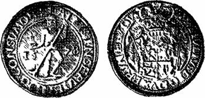
Рис. 39. Лихтталер.
На смену лихтталерам, выпускавшимся в 1569 — 1587 гг., пришли брилленталеры («брилль» — очки), чеканившиеся в 1586 — 1589 гг. от имени того же герцога Юлия (рис. 40).
Лицевая сторона (где обычно бывает портрет короля или князя) брилленталера буквально насыщена изображениями и надписями. Слева помещен конь, справа — тот же Вильдеман, еще правее под светильником — череп, песочные часы в защитном каркасе и очки. На этой стороне даны любопытные надписи на латинском языке. По левой стороне кольца написано (в переводе) «Я употребляю себе на пользу услуги других». Параллельно по полукругу внутренняя надпись из 15 букв, являющихся начальными буквами слов: «Светит и сияет то, что поможет бедным, которые сами себе помочь не умеют». Над головой коня — четыре начальные буквы слов, означающих: «Если я не желаю вредить, зачем будут мне вредить». Смысл надписей можно понять лишь в связи с приводимыми персонажами. О Брауншвейгском коне уже приводились правдивые письменные источники.
Гарцский Вильдеман попал на монету тоже неспроста. Но поскольку он не столь реальная, как конь Рам-мель, личность, о нем существуют разные варианты легенды. Одна из них, услышанная автором в 1966 г. в ГДР, сводится к следующему.
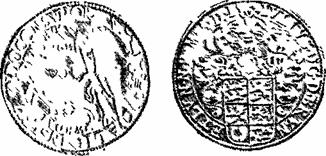
Рис. 40. Брилленталер.
Узнав, что открытие Раммеля имело большое значение для людей, Вильдеман нашел еще одно месторождение серебра, пришел ночью к селению, зажег светильник и стал приглашать людей последовать за ним. Над жилой серебра он погасил светильник и исчез. Месторождение было открыто и стало разрабатываться около 1000 года.
Резчики штемпелей монеты объединили две легенды в один сюжет, создав «геологопоисковый отряд». Конь призывно ржет и спрашивает Вильдемана: «Где будем искать дальше?», а тот, легкий на ногу, но неторопливый, обдумывает направление поисков. Их метод уже отработан Вильдеман выбирает и вырывает с корнем хилое дерево, выросшее там, где тонкий слой почвы, а последняя мало плодородна от вредной рудной минерализации. Конь копытами расширяет яму и выбрасыва ет землю, Вильдеман помогает ему дубиной, сделанной из вырванного дерева. Если жила найдена, конь копытами выбивает штуфы руды для ее оценки. Затем манящим в ночи светильником о находке сообщалось людям.
Известно, что череп, песочные часы и очки считаются традиционным инвентарем алхимиков. Нетрудно догадаться, что в Раммельсберге сначала добывали только серебро — прежде всего самородное, а затем из аргентита. Однако после отработки верхней части месторождения на глубине его оно стало свинцовым. На такой переход обратили внимание алхимики, задавшиеся вопросом: если серебро в месторождении на глубине «превратилось» в свинец, почему нельзя превратить сви — нец «обратно» в серебро? В результате опытов алхимики открыли, что в раммельсбергском свинце есть довольно значительная примесь серебра. В отличие от самородного или от получаемого из аргентита, это серебро до середины XVIII в. называлось алхимическим.
Таким образом, первая из надписей говорит о том, что герцог Юлий использует услуги Раммеля, Вильде-мана и алхимиков. Вторая надпись (15 начальных букв) касается серебра, которое бедные, а вернее — суеверные люди без помощи Раммеля и Вильдемана найти не могут. Третья же надпись (из четырех букв) рассказывает о следующем.
В средневековой Германии существовал обычай, согласно которому в Вальпургиеву ночь, с 30 апреля на 1 мая, рудокопы бежали в горы с горящими факелами и трещотками, чтобы отогнать от рудников злых бесов и ведьм. Вильдеман, относившийся к добрым, положительным персонажам и поэтому носивший всегда дубовые венки на голове и бедрах, этой надписью сообщал, что он знает об этом и на свой счет не принимает.
После брилленталеров в Брауншвейг-Люнебургеуже при герцоге Генрихе-Юлии с 1584 г. чеканились анд-реасталеры. Тип монеты, показанный на рис. 41, был первым и выпускался до начала 1630-х годов. На таком талере изображен пригвожденный к косому андреевскому кресту св. Андрей, от имени которого и произошло название талера. А месторождение Андреасберг, давшее "серебро на чеканку, было открыто в 1521 г. и названо так по сходству с андреевским крестом двух первых найденных на горе Беерберг пересекающихся рудных жил.
Таким образом, от этих трех талеров протягиваются нити к трем главным рудным районам Верхнего Гарца. К сведениям об открытии и разработке первого из них — Раммельсбергского, находящегося близ г. Гослара, следует добавить, что его разработка велась с перерывами. В 1004 —
1006 гг. вследствие чумы, а затем голода, работы прекратились и возобновились лишь в 1010 г. В XIV в. здесь произошел большой обвал, при котором погибло около 400 рудокопов. Последовавший перерыв длился около столетия, после чего в 1473 г. с целью осушения месторождения была заложена штольня. Есть данные, что в 1528 г. добыча серебра здесь велась активно. Месторождение это хотя и относится к территории Верхнего Гарца, стоит особняком. С 1503 г, на монетном дворе г. Гослара (созданном еще в 1047 г.) стали чеканиться мелкие серебряные монеты нового типа — мариенгроши (рис.42).
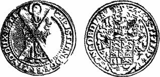
Рис. 41. Андреасталер.
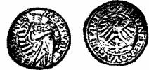
Рис. 42. Госларский мариенгрош.
Крупнейшим районом Верхнего Гарца стал Клау-стальский. На плоскогорье высотой 550 — 600 м и площадью 18X8 км после Вильдемана были открыты месторождения Целлерфельд (около 1150 г., названо по имени Клостера Целла), Клаусталь (в 1226 г.), Лау-тенталь, Найдорф, Альтенау и Грунд. Вблизи них со временем возникли горные города. Целлерфельд получил право свободного горного города в 1532 г. (в 1606 г. здесь был создан монетный двор), Клаусталь, отделенный от Целлерфельда лишь ручьем Целльбах, стал свободным горным городом в 1554 г. (монетный Двор здесь создан в 1624 г.). Вильдеман находится в 4 км на запад от Целлерфельда, а в 6 км на север от Вильдемана расположен Лаутенталь и т. д. Третьим рудным районом Верхнего Гарца является Андреасберг-ский, который также стоит особняком в 16 км на восток от Клаусталя, и сильно отличается от него.
Клаустальский район. Все месторождения Клаус-тальского района связаны с известными здесь десятью мощными жильными поясами, имеющими протяжение 8 — 10 км и мощность до 40 м. К. И. Богданович называет жилы этого района лучистыми, в случае, когда главная жила, протягивающаяся на большое расстояние, образует вместе с сопутствующими ей меньшими жилами свиту жил.
О Вильдемане есть указания, что из-за сильных притоков воды в XIV в. работы приостановились, но были возобновлены лишь в 1524 г. В 1526 г. восстановлена эксплуатация Целлерфельда. Клаустальское месторождение разрабатывалось до 1350 г., а затем снова с 1530 г. Об эксплуатации других месторождений района сведений выявить не удалось. Возобновление работ в Клаустальском рудном районе в 1524 — 1530 гг. произошло после того как были закончены многокилометровые «наследственные» (т. е. проводившиеся не одним поколением) штольни. Они были спроектированы и пройдены настолько успешно, что, помимо осушения огромного рудного района, использовались для подземной транспортировки руды в специальных лодочках по воде. Вытекающая из штолен вода отводилась по каналам к водоналивным «мельничным» колесам и приводила в действие различные рудничные машины.
На рис. 43 показана несколько более поздняя монета 1680 г. чеканки в ИД талера, на лицевой стороне которой изображен Вильдеман на фоне гарцских рудников. В правой части панорамы большое водоналивное колесо, от которого идет «ЛЭП» (линия энергетической передачи) XVII века.
И все же рудники Верхнего Гарца в XVI в. действовали непостоянно. Объяснение этого можно найти в «Главе о деньгах» К. Маркса. В разделе «Благородные металлы как носители денежного отношения» К. Маркс пишет, «…исследование благородных металлов как субъектов денежного отношения, как воплощения последнего, вовсе не лежит вне области политической экономии, как полагает Прудон…».
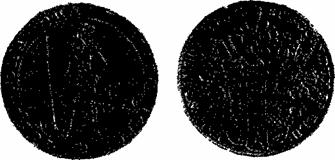
Рис. 43. Монета в 1 1/4 талера 1680 г. (4/5 натур вел).
Многие положения и фактические материалы этого раздела, касающиеся месторождений золота и серебра, представляют огромный интерес при изучении истории учения о рудных месторождениях, помогают, в частности, разобраться в отдельных моментах истории разработки месторождений серебра в XVI — XVII вв.
Как будет показано ниже, золото и серебро привозились в Европу из открытой Колумбом Америки сначала за счет ограбления туземцев, а затем — разработки богатых серебром месторождений Пахука, Зекатекас, Потоси и др. В Европе американское золото и серебро произвели «революцию цен» и, кроме того, сыграли важную, но мало известную роль в судьбе европейской серебродобычи, о которой пишет К. Маркс: «Что в XVI и XVII столетиях не только увеличилось количество золота и серебра, но одновременно уменьшились издержки их производства — в этом Юм мог убедиться на факте закрытия европейских рудников».
Американское золото и серебро поступали в Европу в качестве непосредственного продукта рудников, как товар. Такую же роль эти металлы играли и в производящих золото и серебро европейских странах, в частности, в герцогстве Брауншвейг-Люнебург. Поэтому исследование вопросов, связанных с историей производства серебра на рудниках Верхнего Гарца, должно опи — раться на политэкономию, так как «Политическая экономия начинает с товара».
Размер добычи серебра, причины ее увеличения или снижения обычно упрощенно объясняют богатством или бедностью руд, легкостью или трудностью разработки месторождения и т. п., но за всем этим стоит рабочее время, необходимое для получения готового продукта — серебра. «Золото и серебро, как и все другие товары, — указывал К. Маркс, — меняют величину своей стоимости с изменением требуемого для их произвол-ства рабочего времени, понижаются и повышаются в стоимости, когда уменьшается или увеличивается это рабочее время».
Эти слова К. Маркса объясняют причины закрытия европейских рудников или снижения добычи из них серебра во второй половине XVI в., в том числе непостоянство, как говорилось, добычи серебра в Верхнем Гарце. Позднее, в период Тридцатилетней войны, рудники Верхнего Гарца снова снизили свою производительность в связи с недостатком рабочей силы. Затем, после войны, с введением насосов и других устройств для водоотлива, снова стал развиваться горный промысел.
Лаутенталь. С 30-х годов XVII в. началась вторая жизнь и слава Лаутенталя. Связано это, вероятно, с тем, что рудокопы стали понимать структуру месторождения, где жилы нередко являются сбрасывателями, причем высота сброса в некоторых случаях достигает 200 м. Разобравшись в этом и руководствуясь данными об отработанных сотни лет назад богатых участках, рудокопы стали относительно быстро с малыми затратами рабочего времени находить оторванные сбросом и опущенные части рудных залежей. На одной из них возник рудник «Св. Яков», дававший по началу большие количества серебра, из которого в 1633 — 1634 гг. были отчеканены самые крупные серебряные монеты диаметром 94 мм достоинством в 3, 4, 6, 8, 10 и 16 талеров (рис. 44).
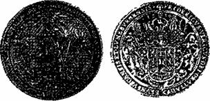
Рис. 44. Восьмиталеровая монета из серебра Лаутенталя (2/5 натур, вел.).
Чеканка производилась одними и теми же штемпелями на монетных кружках разной толщины. Монета в 16 талеров весила около 450 г. На лицевой стороне в середине монеты изображен святой Яков, слева от него здания г. Лаутенталя, а справа — шахта и устье штольни рудника. В кружке, обрамленном венком, у ног святого после чеканки выбивалась цифра, указывающая достоинство монеты.
Появление крупных монет 1633 — 1634 гг. из серебра рудника «св. Якова» следует объяснить и как политическую акцию.
Это были годы середины Тридцатилетней войны в Германии. Война принесла большой ущерб горному делу в Гарце, но монеты не дают повода к такому выводу, так как чеканка их на монетных дворах в Гарце велась ежегодно и, мало того, в 1624 г. даже был открыт еще один монетный двор — в Клаустале, где по этому случаю были отчеканены четырех — и трехталеро-вые монеты. Враждующие же католические и проте-станские армии в горы Гарца не доходили, так как грабить или получать контрибуции с горных городов с малочисленным бедным населением было делом мало выгодным; гораздо больше доходов приносила расправа с населением торговых городов, монастырей, княжеских и епископских резиденций.
Герцог Фридрих-Ульрих, глава так называемой средней Брауншвейгской линии, от имени которого отчеканены крупные монеты 1624 г и 1633 — 1634 гг. был, как пишет К. Маркс «человеком слабым и не имел достаточно средств, чтобы содержать армию; он и его мать боязливо избегали принять сторону курфюрста Пфальц-ского и протестантов», хотя и принадлежали к этой религии. К 1624 г. военное положение протестантского лагеря Германии было весьма плачевным, и тогда Фридрих-Ульрих, уверовав в скорое окончание войны, III! которая не затронула его владений, отчеканил монеты (рис. 45), на которых поместил свой конный портрет с «жезлом командующего» в руках. С усложнением же военной обстановки на стороне протестантов выступил датский король Христиан IV, который потерпел крупное поражение при Люттере (на территории Браун-швейга в 20 км к северо-западу от Гослара). После выхода из войны Дании на стороне тех же протестантов выступил в 1630 г. шведский король Густав II Адольф; в 1632 г. он был убит на поле боя. В 1633 г. полководец Валенштейн вел переговоры со шведами и французами, война продолжалась менее активно и далеко от Брауншвейга. Фридрих-Ульрих снова понадеялся на окончание войны (а серебро Лаутенталя нужно было все равно пускать в обращение) и наряду с серийными отчеканил эти наиболее крупные монеты. В 1634 г. он умер.
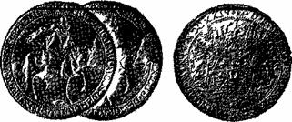
Рис. 45. Четырехталеровая монета, отчеканенная в Клаустале в 1624 г. (2/5 натур, вел).
Андреасберг. Характеризуя Андреасберг, В. А. Обручев отмечает, что «вторая половина XVI в. была периодом его славы, за которым следовал период приостановки, с половины XVII в. до 1917 г. добыча производилась безостановочно». Можно предположить, что в первые сто лет после открытия Андреасбергского рудного района затраты рабочего времени на добычу серебра здесь были ниже, чем на добычу (и доставку) серебра из месторождений Мексики и Перу, ибо добывались тогда самородное серебро и другие богатые руды из многочисленных жил. Когда же характер руд изменился, в добыче наступил перерыв.
Рудные жилы Андреасберга распространены в пределах клина, образуемого двумя сходящимися главными безрудными жилообразными поясами — «руше-лями» длиной по 3 км при расстоянии в основании клина в 1 км. К. И. Богданович отмечает, что «жилы Андреасберга отличаются очень глубоким проникновением пояса вторичного изменения с благородными рудами… Понижение пояса вторичных руд объясняется, быть может, последующим опусканием всей рудоносной площади и следовательно повышением горизонта грунтовых вод». От этого произошло несколько необычное соотношение разработки жил по простиранию и падению. Так, в середине прошлого века жила «Самсон», прослеженная по поверхности только на 700 м, разрабатывалась на глубине 800 м «и никаких признаков выклинивания по сю пору не замечено еще», причем эта жила «имеет всего только средним числом 0,60 метра толщины». К 1913 г. некоторые жилы Андреасберга были прослежены до глубины 1300 м.
Необходимо отметить, что данные нумизматики о славе Андреасберга несколько отличаются от тех, которые приведены выше, по В. А. Обручеву. Дело в том что из андреасбергского серебра талеры с начала 30-х гг. XVII в. не чеканились, и в Адреасберге был закрыт монетный двор в связи с отсутствием сырья. Возобновилась чеканка монет со св. Андреем лишь в 1678 г., но они очень редки. Сравнительно массовая чеканка велась в начале XVIII в., причем на монетных Дворах гг. Клаусталя и Целлерфельда. Перерыв в добыче наступил, вероятно, когда были исчерпаны «благородные» руды, о которых писал К. И. Богданович, а возобновлялась эксплуатация андреасбергских месторождений с развитием техники, после того как рентабельной стала добыча глубоко опущенных первичных руд.
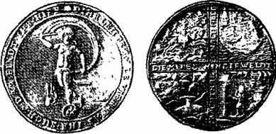
Рис. 46. Монета в 1 1/4 талера из серебра Андреасберга.
В Андреасберге, до закрытия монетного двора, отчеканена первая в истории монета, на которой показан процесс горных работ. На лицевой стороне этой монеты изображена Фортуна — древнеримская богиня счастья (рис. 46).
Сначала Фортуна изображалась в виде одетой женщины, стоящей на шаре и опирающейся на руль, с помощью которого она ведет тех, кто в нее верит, к счастью. Еще во II столетии до н. э. культ богини счастья дифференцировался на множество отдельных культов соответственно представлениям и понятиям у разных категорий людей о счастье и его воплощении Один из культов представлен на монете. Попробуем в нем разобраться.
Здесь Фортуна обнажена. Вероятно, этим подчеркивается, что такая Фортуна — богиня тех, кто ожидает счастья от первозданной природы, т. е. в его самом естественном виде. Фортуна скользит по поверхности океана на шаре с цифрами, говорящими, что номина. монеты 1 1/4 талера. Это единственное, правда и решаю щее (вместе с подтверждающей номинал массой — 35, 7 г), доказательство того, что перед вами не медаль, а монета. Другие данные — о государственной принадлежности, времени и месте чеканки — на монете отсутствуют, они почерпнуты из каталогов монет. В руках богини парус. Он мчит ее на встречу к тем, в чьих трудах и занятиях немалую роль играет случайность. Руля у этой Фортуны нет. Счастье, которое она несет, не относится к устойчивому, размеренному, управляемому. Им завладевают не по писанным правилам: его добывают, надеясь на удачу. А старинная монета нацеливает и предупреждает более широко и конкретно: надо рискнуть; непростительно допустить просчет, оплошность, ошибку; промахнуться и промедлить нельзя. Ибо упущенную возможность, как и промчавшуюся мимо Фортуну, не догнать, счастливый случай ускользнет.
Оборотная сторона монеты свидетельствует о том, что, по представлениям начала 1600-х гг., эти напоминания прежде всего должны иметь в виду охотники, рыбаки, рудокопы-разведчики и алхимики (точнее, металлурги-экспериментаторы). В их делах успех достигается лишь при покровительстве Фортуны, и то, что они добывают: дичь, рыба, руда, серебро (особенно, самородное), достигается в первозданном, природном виде.
На обеих сторонах монеты надписи в стихах (что затрудняет перевод, особенно если учесть изменения языка почти за 350 лет). Вокруг Фортуны кольцевая надпись: «Люди! Все четыре (дичь, рыбу, руду, серебро. — М. М.), что вы ищете, это найдете вы здесь». На оборотной стороне крестообразная надпись: «Люди мира стремятся к деньгам».
Поскольку монета из серебра, главным в сюжете ее оборотной стороны надо считать, конечно, добычу руд этого металла. Из расшифровки изображений, да и толкования надписей, видно, что отсутствие необходимого геологического обоснования для постановки разведочных работ и разработки месторождения серебряных руд тогда в значительной степени восполнялось надеждой рудокопа на удачу, на счастливый случай, хотя эта надежда и опиралась на поисковые признаки, собранные рудокопами примерно за 650 лет, прошедших после открытия в Гарце первых месторождений серебра.
С Андреасбергом связаны монеты, явившиеся частью одного «дивного собрания», которые дали повод показать труд нумизмата-любителя, имеющий в психологическом отношении ряд общих моментов с научным творчеством, показанными академиком А. Б. Мигдалом «Среди людей, далеких от науки, — пишет А. Б. Миг-дал, — широко распространено мнение, что ученый руководствуется в своей работе стремлением сделать открытие. Между тем .. его задача — глубокое и всестороннее исследование интересующей его области науки. Открытие возникает только как побочный продукт этого исследования .. Небольшие, обычно невидимые миру „открытия“ делаются непрерывно, и именно они составляют радость повседневной работы в науке… В науке необходима способность удивляться тому, что возникает в результате осмысливания накопленных знаний». О «радостях», «удивлениях» и «открытиях» нумизмата-любителя и пойдет речь ниже — в данном случае в связи с расшифровкой слов библиотекаря И. Д. Шумахера из отчета Петру I о своем заграничном путешествии в 1721 — 1722 гг.:
«В Гановере имеет старый аббе Мелан монетный кабинет великого достоинства, оный же состоит из всяких разных монет. Но дивное собрание люнебургских монет и талеров, которые повелением иных князей деланы, удивления достойно есть».
Новая Люнебургская линия (с основным Целль-ским княжеством) Брауншвейг-Люнебургского дома возникла в начале XVII в. До 1633 г. во главе ее был герцог Христиан, затем его брат Август, а с 1636 по 1648 г. — третий брат Фридрих. Но их монеты (за исключением монет Фридриха 1647 —
1648 гг) были обычными — с портретом герцога или Вильдеманом на его месте. Поэтому, когда в ходе поиска монет для иллюстрации данной книги, в коллекцию попал двойной люнебургский талер 1672 г., показывающий добычу серебряных руд (рис. 47, а), уже сама по себе такая находка была огромной радостью. Вместе с тем она вызвала и большое удивление: сторона монеты, на которой показано месторождение, отчеканена тем же самым (не подобным, а тем же) штемпелем, что и ранее имевшаяся в коллекции монета в iVa талера (1681 г.) герцога Эрнста-Августа, Вызвала удивление и буква «F» в центре лицевой стороны монеты, так как в 1672 г. не было правившего в каком-либо княжестве (т е имевшего и право чеканки монет) герцога Брауншвейг-Люнебурга, имя которого начиналось бы с этой буквы. Но тут обрадовала крохотная, массой примерно 0,8 г серебряная монетка в один мариенгрош (1/36 талера) 1675 г. (рис. 47, 6). На ней, как и на двойном талере, находится девиз «Ex duns gloria» — «Из терпения слава», но при этом есть с небольшими сокращениями и имя князя — «Иоанн-Фридрих божьей милостью гер-Цог Брауншвейг-Люнебурга».
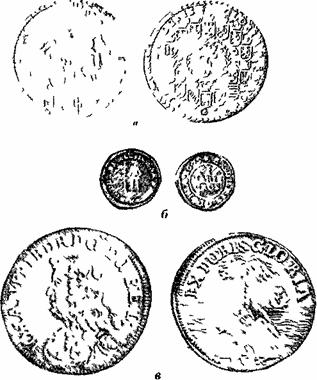
Рис. 47. Монеты Иоанна Фридриха:
а — двухталеровая (Vs натур вел);
б — I мариенгрош;
в — гульден.
Оказалось, что в центре большой монеты находится не просто буква «F», а монограмма из «F» и «J», причем вторая наложена на первую таким образом, что она практически незаметна.
Затем снова удивление: на гульдене 1676 г. с портретом и титулом того же Иоанна-Фридриха на оборотной стороне изображена скала в море и на ней пальма (рис. 47, в). А ведь Брауншвейг — Люнебург не имел выхода к морю. Причем же тогда пальма на острове? Пришлось, поскольку другие источники не известны, обратиться к старым каталогам монет[24].
В каталоге нашлось описание двойного талера 1678 г. из серебра рудника «Герцог Иоанн-Фридрих» с портретом и титулом этого герцога. Еще большую радость принесло описание медальона (также без иллюстрации) массой 29, 2 г, диаметром 65 мм, без даты чеканки. На одной его стороне портрет и титул Иоанна-Фридриха, а на другой — тот же Иоанн-Фридрих во весь рост, одетый «наполовину, как рудокоп, наполовину, как рыцарь». Под этим изображением надпись: «Hie ima et summa».
Иоанн-Фридрих был одним из младших сыновей герцога Георга, владетеля «удельного» княжества Кален-бергского Люнебургской линии. Этот Георг в Тридцатилетней войне был на стороне то католиков, то (под конец) — протестантов и шведов. Перед одним из сражений в октябре 1640 г. четыре генерала устроили крепкую попойку. Из ее участников, как пишет К. Маркс: «.. ландграф Христиан Гессенский и Отто Шаумбургский умерли еще в ноябре 1640 г. а 2 апреля 1641 г. умер герцог Георг Люнебургский». (В мае 1641 г. умер и четвертый участник — швед Банер)
После смерти Георга владетелем Каленберга в 1641 г. стал старший сын Христиан-Людвиг. Но в 1648 г., когда умер упоминавшийся выше его бездетный дядя Фридрих, он стал наследником основного Целль-ского княжества Люнебургской линии, и по этому поводу был отчеканен тройной талер (рис 48). Кален-берг же перешел ко второму сыну Георга — Георгу-Вильгельму. Христиан — Людвиг умер в 1665 г.
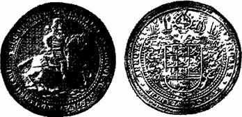
Рис. 48. Трехталеровая монета 1648 г. Христиана-Людвига (3/5 натур, вел).
Целльское княжество перешло по старшинству к Георгу-Вильгельму, а Каленберг, в свою очередь, — к Иоанну-Фридриху, который правил им до своей смерти в 1679 г. После этого Каленберг достался самому младшему из братьев — Эрнсту-Августу.
Иоанн-Фридрих и Эрнст-Август — младшие сыновья «удельного» князя Георга — в молодости не имели шансов на получение княжества в наследство. Поэтому первого из них готовили к гражданской службе, а второго к духовной. Иоанн-Фридрих, родившийся в 1625 г., мог начать службу, хотя бы номинально, чтобы получать жалование, перед концом Тридцатилетней войны. Но чем он занимался до получения в 1665 г. княжества?
Анализ нумизматического материала позволяет предположить, что Иоанн-Фридрих отвечал в семье за добычу серебра в Гарце и чеканку монет. Его девиз «Ex duns gloria] близок по смыслу к другим изречениям, запечатленным на более поздних горнорудных монетах. Но особенно укрепляет правильность этого предположения медальон, на котором Иоанн-Фридрих изображен наполовину рудокопом, наполовину рыцарем, так как надпись под этим изображением в переводе означает: „В этом идея и главная суть“.
Уже в бытность Иоанна-Фридриха владетельным князем была, видимо, восстановлена добыча серебра на одном из старых рудников, названном его именем. Открытие это было сначала аллегорически отмечено путем изображения на монете пальмы, выросшей на голой скале в море, а затем чеканкой двойного талера, на котором имеется латинская надпись: «Fodina revirescens» — «рудник возобновлен».
Первые крупные люнебургские монеты, с которых, вероятно, и начинается «дивное собрание», чеканились в конце правления герцога Фридриха Целльского (рис. 49). На оборотной стороне этой трехталеровой монеты чеканки 1647 г. показана часть Гарца, а в центре — гора, в которую пройдена штольня, около устья штольни — два рудокопа На вершине горы стоит дерево — совсем как одинокая пальма на скалистом острове!
Монеты с конем Раммелем, в том числе крупные шеститалеровые и мелкие в Vie талера (рис. 50), появились еще в правление Христиана-Людвига, однако конь на них менее изящен, чем на более поздних монетах с именем Иоанна-Фридриха.
Наибольшее же впечатление производит тройной талер 1665 г. (рис 51), отчеканенный в связи со смертью Христиана-Людвига На оборотной стороне этой монеты, чеканка которой не повторялась, на фоне рудников изображен величественный Вильдеман, первооткрыватель в 1000 году одноименного месторождения серебра, символизирующий мощь Брауншвейг-Люне-бурга. Но это не траурная монета (такие чеканились само-собой), а очередной панегирик горному делу в Гарце. «Между строк» читается не горечь в связи со смертью старшего брата, а радость Иоанна-Фридриха по поводу того что он становится «удельным» князем Каленбергским.
От времени правления самого Иоанна-Фридриха осталось наибольшее разнообразие монет. Он возобновил чеканку по-своему «дивных» мелких серебряных монет — мариенгрошей, но поместил на них вместо монограммы, как было при Фридрихе-Ульрихе Вольфен-бюттельском, Вильдемана (см рис 47, б) или Мадонну (рис 52, а), или ев Андрея (рис 52, 6). При нем и на талерах, кроме Раммеля и Вильдемана, после длительного перерыва в 1666 г появился ев Андрей с надписью по-латински: «reviviscens» — «восстановитель» добычи. Поскольку возобновление чеканки адреасталеров совпадает по времени с чеканкой первых талеров Гарца С/2 натур вел) с пальмой, а затем — двойного талера из серебра рудника «Герцог Иоанн-Фридрих», следует предположить, что этот рудник был восстановлен на одной из жил Андреасберга, после того как горняки стали разбираться в том, что мы называем сейчас тектоникой месторождения.
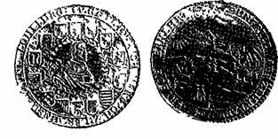
Рис. 49. Трехталеровая монета 1647 г Фридриха (1/2 натур вел).
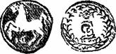
Рис. 50. Монета в Vie талера.
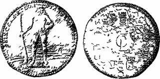
Рис. 51. Трехталеровая монета 1665 г Вильдеман на фоне рудников.
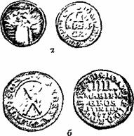
Рис. 52. Монеты Иоанна Фридриха:
а — в 2 мариенгроша с Мадонной;
б — в 4 мариенгроша.
Из всего сказанного напрашивается следующий вывод: к 1722 г. (тогда обе люнебургские линии уже были слиты в одну КаленбергТанноверскую и ею управлял сын Эрнста-Августа Георг-Людвиг, ставший к тому времени и королем Англии Георгом I) у аббата Мелана в «дивном собрании люнебургских монет и талеров», оказались монеты, чеканка которых началась и получила направление в период, когда горным и монетным делом в Гарце управлял герцог Иоанн-Фридрих.
Эти обстоятельства важно отметить, так как горное дело, особенно добыча серебра, в Германии всегда было передовой отраслью промысла, а затем и промышленности. И именно здесь раньше, чем в других отраслях, зародились капиталистические отношения в недрах феодального общества. На люнебургских монетах впервые (если не считать монету с Фортуной, см. рис. 46) изображены рудокопы в трудовом процессе. На двух-талеровике Иоанна-Фридриха показаны основные виды работ: поиски жил с помощью лозы, проходка шурфа, откатка руды в тачке от устья шахты, подъем руды из гезенка, установка крепи, процесс отбойки руды, а также технические средства, применяемые при этом.
Для «широкой публики», хотя и очень высокопоставленной, для которой чеканились эти монеты, все это было неизвестно. Пропагандируя горное дело, Иоанн-Фридрих (конечно, не сам, а в первую очередь его помощники, из которых известны Липпольд Вефер в Клаустале и Хеннциг Шлюттер в Целлерфельде) опередили «век Просвещения» по сравнению с другими германскими государствами на полстолетия.
Саксония и МансфельдРудные горы герцогства Саксонии, ядром которого оставалось маркграфство Мейсен, так же, как и Гарц, были в 1450 — 1550 гг. теми главными районами добычи серебра, которые дали Ф. Энгельсу повод назвать Германию великой страной серебра. В этот период продолжалась разработка Фрейберга и были открыты другие крупные месторождения серебра.
Фрейберг. В 1540 г. в городе проживало 32763 человека старше И лет, из них мужчины были в основном рудокопами. В 1569 г. на водоотливе работало 2100 лошадей и 250 рабочих, а когда в 1570 г. обер-бергмейстер Планер впервые ввел здесь штанговые насосы, это дало в течение года экономию в 100 тыс. талеров. Во Фрейберге же в 1613 г. обербергмейстер Вейгель впервые применил «порохострельные» (взрывные) работы. В том же году для откатки руды были впервые применены «собаки» (вагонетки), а для подъема воды по шахтным стволам вместо конных воротов — «вододействующие» (гидравлические) колеса. Доходность Фрейбергских рудников тогда была значи — тельной: за столетие с 1529 по 1630 г., после уплаты податей, они дали 3, 5 млн. талеров прибыли. Непосредственно на месторождении находился монетный двор. На чеканенных там талерах стояло сокращенное название «FREI» (рис. 53).
Фрейбергские рудокопы в старину знали о влиянии вмещающих пород на рудоносность жил, выделяя «подходящие, или ласковые горы» и «горы дикие, не подходящие». Они различали жилы, продолжающиеся в «вечную глубину», и поверхностные, прекращающиеся на незначительной глубине. Они ввели термин «облагораживание», под которым понимали обогащение жил серебром в местах их пересечения.
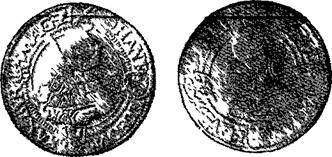
Рис. 53. Талер из серебра Фрейберга.
Район Фрейбергских месторождений серебра сложен серыми биотитовыми и красными мусковитовыми гнейсами, образующими куполообразный массив с гранитами в ядре. Окружающие осадочные породы — известняки, песчаники, конгломераты, кварциты, слюдяные сланцы и т. п. — вблизи купола метаморфизованы. В районе Фрейбергского купола насчитывается 1100 жил, которые образуют четкую сеть двух основных направлений: северо-восточного и северо-западного и имеют крутое падение. Мощность жил от 0,1 до 4 м, по простиранию некоторые из них прослеживаются до 8 км, по падению на 600 м. По составу эти жилы делятся на пять групп: оловянно-кварцевые, кварцево-галенитовые (богатые серебром), пирито-галенитовые, галенито-сере-бряные, барито — флюорито-галенитовые.
Рудные минералы во всех фрейбергских жилах располагаются неравномерно, образуя то густые скопления, то слабо оруденелые зоны. Богатые серебром руды с глубиной переходят в бедные свинцовые и свинцово-цинковые. При этом постепенно увеличивается содержание пирита и сфалерита и уменьшается содержание галенита, особенно серебросодержащего.
Шнееберг. В 1977 г. исполнилось 500 лет со времени добычи самого крупного из упоминавшихся в литературе самородков серебра, весившего (вероятно, с включениями аргентита) 20 т. Об этом открытии имеются данные в трех источниках. Два столетия назад в 1780 г. анонимном труде сообщалось, что «Серебряная жила в руднике ев Георгия в Шнееберге, как из истории известно, прежде всего столь была толста, что герцог Альбрехт, светлейший прародитель Саксонского курфюрстского дома, кушать мог на одном из нея для стола вырубленном куске, который весил 400 центнеров серебра»[25].
Примерно через 100 лет об этом же месторождении было написано более подробно: «Близь Шнееберга в Гогенфорсте в 1410 г. открыли шурфовкою серебряные руды, но разработка их вследствие неблагоприятных условий была оставлена Вновь эти рудные жилы были открыты лишь в 1471 г. …Вскоре новый город, построенный на горе Шнееберге, насчитывал уже до 12000 жителей. Самый богатый рудник носил название „Св. Георг“. В 1477 г. из него были добыты богатейшие руды, которые при выплавке дали 400 центнеров чистого серебра».
Наконец, В. А. Обручев отметил, что «Шнееберг, открытый в 1471 г., расположен к 3 от Аннаберга и очень близко к граниту Эйбенштока… В пересекающихся жилах рудника „Св Георга“ в 1477 г была найдена глыба в 20 т серебряного блеска и самородного серебра».
Таким образом, во всех трех источниках упоминается самородок в 400 саксонских центнеров, или 20 метрических тонн. Во втором и третьем источниках названа конкретная дата его находки — 1477 г, в первом отмечено, что событие произошло при саксонском герцоге Альбрехте, правившем в 1464 — 1500 гг.
Следует отметить, что Г. Агрикола писал об этом месторождении в 1546 г несколько по-иному: «В 25 милях (от Фрейберга — М. М.) — Шнеебергский рудник, который назвали «Нивис монс» (Снежная гора). Среди всех рудников Германии в нем больше всего найдено самородков чистого серебра»[26].
Наиболее доходчивым и образным является описание самородка, приведенное в первом источнике. Двадцатитонная глыба серебра и аргентита со средней плотностью 9 (если серебра и аргентита было поровну) высотой, например, 1 м при ширине 1 м должна иметь длину 2, 2 м. Это подходящие размеры для обеденного стола на одну княжескую персону. Если жила вырублена по самым зальбандам, на ней должны быть параллельные плоскости, удобные для того чтобы стол стоял прочно и имел горизонтальную поверхность. Если жила имела другую мощность (например, между 0,7 — 1, 2 м, как говорилось, «жила… была толста»), под высоту стола мог быть подобран соответствующий стул.
Из шахты двадцатитонную глыбу вынуть в то время было невозможно: не выдержали бы канат и вал ворота. Следовательно, она была вытащена на катках из штольни или рва (напомним, что это было на шестом году эксплуатации месторождения). Сомнительно, чтобы такой «стол» был доставлен в какой-либо герцогский замок. Скорее всего, обед для герцога был устроен по случаю такого радостного события непосредственно вблизи того места, где был добыт самородок. Затем глыба была разбита на куски и взвешена по частям, так как весы на 20 т в то время отсутствовали.
Надо иметь в виду еще и такое обстоятельство: герцог, как хозяин земли, имел право только на 4-ю часть добычи («горную десятину»), т е. на 2 т, а оплатить горнодобывающему паевому товариществу остальные 18 т (чтобы привезти самородок в свой замок) даже ему было не по средствам. Это очень убедительно видно из следующего. В 1485 г., когда венгры заняли большую часть австрийских владений, а Альбрехт был главнокомандующим императорской армии, «. ему пришлось тогда, к великой досаде своих саксонцев, дать взаймы 30000 дукатов (золотых гульденов) Фридриху III, который был гол, как сокол». Что такое золотой гульден в «серебряном весе», помогает представить Г. Агрикола, писавший: «…вспомним шнеебергского Ремера из Цвикау. Один богатый рудник, самый известный и доходный во всем Майсене, называвшийся „Георг“, дал ему доход, превысивший 150000 гульден-грошей, имеющих ту же ценность, что и рейнские гульдены». Гульденгрош весил тогда 29, 2 г, в нем было около 27 г серебра, т. е. из одной тонны серебра можно было начеканить 37000 гульденгрошей, равных по цене дукату, а в виде сырья она стоила меньше не на много. Если император был «гол как сокол», если герцог не без труда мог дать ему взаймы 30 000 дукатов, — вы — платить за 18 т серебра (с примесью богатой руды) сумму около 500000 дукатов было для него делом непосильным.
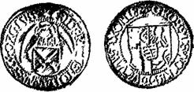
Рис. 54. Грош из серебра Шнееберга.
Разработка Шнеебергского месторождения дала особенно высокие доходы за первые 30 лет, когда с 1471 по 1500 год было добыто 32 тыс. саксонских центнеров серебра. В 1482 г. здесь было уже 166 действующих рудников. Оставшиеся запасы серебра Г. Агрикола (на 1546 г.) оценивал в 2 млн. рейнских гульденов, или в пересчете через гульденгроши — 1080 саксонских центнеров (54 тонны) серебра. Количество это не столь велико, ибо подсчет велся, вероятно, до уровня возможного осушения месторождения.
В конце XV в. в Саксонии выпускались «ангел-гроши». Такие монеты со звездой в верху чеканились из серебра Шнееберга (рис. 54).
Аннаберг. Серебряные руды в Аннаберге открыл шурфовкою в середине XV в. горняк Даниил
Кнаппе. Добыча серебра здесь в широких масштабах началась в 1492 г., в 1496 г. был заложен и в 1505 г. построен горный городок Аннаберг. Первоначально он носил название той горы, на которой был построен, и именовался Шреккенбергом. Богатство серебряных руд побудило организовать в 1499 г. непосредственно в Аннаберге монетный двор, на котором за 60 лет его действия было отчеканено 3, 5 млн талеров с буквами ANB в конце надписи на одной из сторон (рис. 55). В 1540 г число рудников здесь достигало 700. Г. Агрикола сообщает, что в Аннабергском руднике под названием «Небесное воинство» рудокопы за одну четверть года добыли так много серебра, что по каждому отдельному паю в 1/128 долю было выдано по 800 талеров.
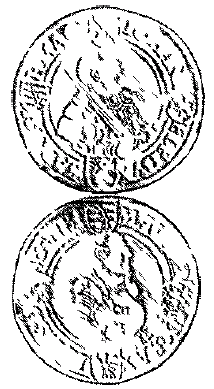
Рис. 55. Талер из серебра Аннаберга.
Месторождение Аннаберг приурочено к зоне кон-тактово-метаморфизованных глинистых сланцев, прорванных гранитным массивом Эйбенштока Близ Аннаберга известно около 300 жил меридионального и широтного направления, прослеживающихся по простиранию до 800 м и по падению на 100 — 400 м. Жильными минералами в них являются кварц, барит, плавиковый шпат и бурый шпат, рудными минералами — гнейсовый кобальт, купферникель, самородное серебро На серебро это месторождение перестало разрабатываться в прошлом веке.
Мариенберг. В 1521 г. были открыты серебряные руды в Мариенберге, которые в верхних частях месторождения отличались богатым содержанием серебра, но вскоре обеднели «В Мариенберге, — писал М. В Ломоносов, — находят полупрозрачную рогу цветом подобную серебряную руду, которая толь плавка, что от свечного пламени тает».
Серебро этого месторождения перечеканивалось в монету на других монетных дворах. Однако имеется необычный нумизматический памятник, отчеканенный из мариенбергского серебра, — ромбовидная медаль, выдававшаяся победителям стрелковых соревнований в Мариенберге (рис. 56).
На одной из ее сторон надпись, а под нею горные молотки, на другой — герб города.
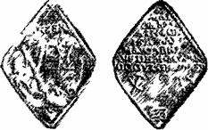
Рис. 56. Медаль из серебра Мариенберга.
Мансфельд. Примером месторождений серебра в медистых сланцах является Мансфельд. Медистые сланцы пользуются значительным распространением по южному склону Гарца и Тюрингенского леса, залегая несогласно на красных песчаниках и конгломератах, и занимают площадь 200X150 км. Этими сланцами сложена и Мансфельдская мульда, возникшая при формировании Среднегерманских гор. Одним из крупнейших центров добычи является г. Эйслебен.
Геологический разрез здесь был описан еще М. В. Ломоносовым.
Медистый сланец представляет собой черноватый битуминозный (углистый) мергель, плотный, тонкосланцеватой структуры. Мельчайшая пыль (шпейза) придает в изломе металлический блеск сланцу, руда состоит из борнита, халькопирита, медного блеска и ковеллина, заключающих основную часть добываемого серебра. В качестве небольшой примеси имеются пирит, свинцовый блеск, цинковая обманка и другие минералы. Всего в мансфельдских рудах присутствует свыше 80 химических элементов Руда пропитывает всю толщу сланца, но из общей мощности (50 см) наиболее выгодна для плавки нижняя часть (в 8 — 12, редко до 17 см). Кверху, с понижением битуминозности, сланец беднеет. Содержание меди в руде в среднем 2 — 3%, а 1 т меди содержит 5 — 6 кг серебра.
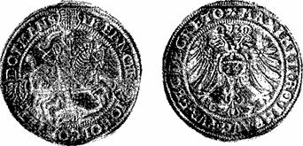
Рис. 57. Талер Мансфельдских графов Петра-Эрнста, Христофора и Иоганна-Гойера, 1572 г.
Горный промысел в Мансфельде возник в 1150 г. К концу XIV в. добыча серебра и меди достигла наибольшего развития. Известно, что в XV в. из манс-фельдских руд ежегодно выплавлялось около 1000 т меди. На мансфельдских талерах обычно изображается рыцарь на коне, закалывающий дракона, а в круговой надписи три-четыре, а иногда и пять имен графов-владельцев рудников (рис. 57).
В 1966 г. автор посетил Мансфельдскии район, а также юго-восточную часть Гарца (на территории ГДР). Мансфельдские рудники сейчас дают 14 полезных компонентов: медь, окись цинка, свинец, серебро, селен, ванадий, кобальт, молибден, рений, платиноиды, сульфат никеля и др.
На углистом сланце базируется энергетика предприятия, а шлак перерабатывается на брусчатку (для мощения дорог).
ЧехияВ Чехии продолжалась разработка Пршибрама и Кутна-Горы. Однако самой значительной рудо— носной областью становятся Крушные (Рудные) горы, где были открыты месторождения сереброносных руд пятиэлементной формации (что и в Шнееберге) — Нхи-мов, Абертами, Божий дар и др.
Яхимов. Полоса серебряных месторождении нудных гор от Фрейберга и Аннаберга протянулась к Яхимову. Название месторождения и рудника Яхимовсталь (долина св. Яхима) было увековечено в крупной серебряной монете массой 28 — 29 г, которая с начала XVI в. имела хождение почти во всех странах Западной Европы и называлась яхимовсталер, а затем на западе — просто талер и в России — ефимок.
Месторождение Яхимов было открыто чешскими горняками из Остравы и Мишеньска, которые добывали здесь железную руду. Однако добыча руды велась слабо, от случая к случаю. В 1516 г. хозяин земли граф Стефан Шлик узнал, что горняки нашли серебряную руду, и вместе с несколькими другими предпринимателями приступил к организации ее добычи. В результате начавшейся «серебряной горячки» в Яхимов стали стекаться горняки с ближайших рудников Аннаберга, Мариенберга и Кутна-Горы. В этом же году для защиты рудников началось строительство крепости Фрейденфейн и поселка, который насчитывал 400 домов. В 1520 г. он был объявлен королевским свободным горным городом со своим гербом и насчитывал до 20 тысяч жителей, из которых на рудниках работало свыше 8 тысяч горняков и 400 мастеров.
В первые годы Стефан Шлик все выплавляемое из руд серебро продавал в слитках. Затем он добился у короля Людовика разрешения на чеканку и с 1519 г. стал выпускать свои монеты, ставшие всемирно известными как талеры. На одной стороне талера изображен св. Яхим, а на другой лев — герб Чехии (рис. 58).
По данным С. В. Шухардина, с 1516 по 1545 г. рудники дали чистой прибыли больше 3 млн. талеров, или больше 109 тыс. талеров в год, что по тому времени представляло очень большую сумму. Производительность монетного двора выросла с 92416 талеров в 1519 г. до 208593 талеров в 1527 г.
Яхимовское месторождение относится к типу жильных. Оно приурочено к контактовой зоне гранитного массива, прорывающего глинистые сланцы. Главных жил 36. Мощность их колеблется от 0,15 до 0,6 м, редко достигая 1 — 2 м. Жильными минералами являются кварц, кальцит и доломит. Рудные минералы — шпей-совый кобальт, висмутовый блеск, купферникель, самородное серебро, аргентит. Наиболее богатые руды встречались в пересечениях жил.
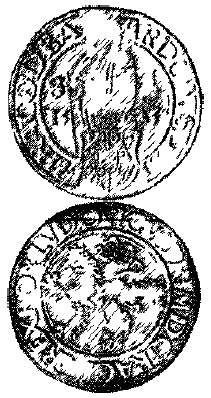
Рис. 58. Яхимовсталер 1525 г.
В первой половине XVI в в Крушных горах было основано И новых горных городов и десятки горняцких поселений. Яхимовская штольня Барбара уже в конце XVI в достигла небывалой длины — 11,5 км. Благодаря использованию штолен (в Саксонии и Гарце их было меньше и они были короче) в Яхимове уже во второй половине XVI в была достигнута глубина отработки (подсечения от поверхности) 400 м, в Абертамах — около 300 м. Начали применяться большие вороты с приводом от водяного колеса диаметром до 12 м. Качалки с тягой до 1 км. (см рис. 43.) впервые построены были в Яхимове в 1551 г и затем распространились по Европе «Крушногорскую технику» прославили Г. Агрикола и другие авторы XVI — XVII вв.
Австрийские землиЭльзас. Эльзас и Лотарингия были в числе причин и поводов для войн между Германией и Францией в XIX — XX вв из-за находящихся в недрах этих областей угля и железа Но «яблоком раздора» Эльзас был и много раньше, так как одна его часть — Верхний Эльзас и графство Пфирт — принадлежала Габсбургам, о чем свидетельствует талер эрцгерцога Фердинанда (рис 59) Одним из следствий Тридцатилетней войны была передача Верхнего Эльзаса Франции и объединение его с Нижним Эльзасом.
В Нижнем Эльзасе, на территории которого находятся Вогезы, рудники когда-то разрабатывавшиеся римлянами, стали восстанавливаться в XVI в. Так, В. И. Вернадский отмечает: «В 1539 г., около Маркирха в Эльзасе, в Юнггрубе Сент-Вильгельм, найдено самородное серебро весом в 150 кг, которое могло сразу идти в обработку; в 1581 г. в руднике Цур-Трейс в Клейнлеберау найдено самородное древовидное серебро в 592 кг весом».
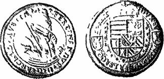
Рис. 59. Талер графства Пфирт.
Г. Агрикола писал в 1546 г :
«В Юрских горах Франции, что называются Вогезами, разработку серебряного рудника ведут также немцы Этот рудник называется Фюрст; он находится в ведении герцога Лотарингского. У подножия этих гор германцы добывают серебро в долинах Лебер и Эккрих». Ясно, что В. И. Вернадский и Г. Агрикола писали об одном и том же районе, так как Клейнлеберау и Лебер или одна и та же река или первая приток второй.
Серебряные рудники Нижнего Эльзаса давали большие доходы. Так, «В Ла-кроа-о-мине, в Вожском департаменте, прежде разрабатывали жилу серебристого свинца, которая после американских есть величайшая из числа известных Толщина ее составляет многие сажени; она была открыта и разрабатывалась на пространстве более мили в длину. Рудники существовавшие на этой жиле, производили, по уверению некоторых, в конце 16 столетия по 750000 франков (около 196 пудов) серебра ежегодно…».
На рис. 60 показан тестон 1544 г. герцога Антона Лотарингского — монета, весившая около 9, 65 г и содержавшая 8, 35 г серебра.
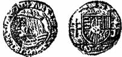
Рис. 60. Тестон из серебра Вогезов.
Тироль. Добыча серебра в Северном Тироле на Швацких рудниках началась в 1409 г. О Тироле и его рудниках неоднократно упоминает в «Хронологических выписках» К. Маркс. В 1411 г. владения Габсбургов были поделены между принцами-наследниками, и Тироль достался Фридриху («с пустой мошной»). Разработка Швацких рудников шла успешно и к 1432 г. Фридрих свою «мошну, благодаря открытию богатых залежей металла в рудниках Тироля, кое-чем пополнил». После смерти Фридриха Тирольского опекуном его сына, впоследствии «слабоумного герцога Сигиз-мунда Тирольского», стал старший двоюродный брат — император Фридрих III. Опека, видимо, запомнилась надолго, так как когда Сигизмунд стал совершеннолетним и избавился от нее, он участвовал во многих междоусобных конфликтах и был ярым противником Фридриха III и его сына Максимилиана.
В 1486 г. в тирольском городе Галле была впервые (после античных декадрахм) отчеканена серебряная монета — гульдинер массой в одну унцию (несколько больше 31 г) с портретом Сигизмунда в полный рост (рис. 61). Появление этой монеты связано с резким увеличением добычи серебра на Фалькенштейнском руднике в Шваце, где в 1483 г. было добыто 825 пудов серебра.
Но 18 марта 1490 г. после ряда неудач в войнах с родственниками «…Сигизмунд Тирольский уступил Тироль Максимилиану (своему племяннику) за ежегодную ренту в 52000 дукатов для себя и своей жены».
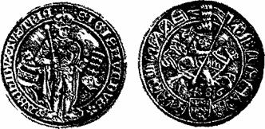
Рис. 61. Талер Сигизмунда Тирольского из серебра Шваца.
Максимилиан с 1493 г. стал императором «Священной римской империи». В 1519 г. — в год его смерти — тирольские рудники давали только податей на сумму до 200000 гульдинеров В то время на рудниках работало 7000 рабочих, а в 1523 г. их было уже 30000. С 1525 по 1564 г, когда Тиролем правил внук Максимилиана — Фердинанд I (в 1558 — 1564 гг. он был императором), Швацкие рудники дали 34745 пудов или около 900 пудов серебра в год. Есть также данные, что рудники в Рерербюхле с 1550 по 1606 г. дали 10268 пудов серебра и почти столько же было добыто на рудниках в Роттенбурге.
Швацкие месторождения относятся к типу жил блеклых медных руд, содержащих серебро. Они расположены на западном продолжении пояса жил Миттер-берга. Добыча производилась в горах на высоте 1200 м, а глубина шахт достигла 800 м. На откачке воды было занято до 600 рабочих, пока уроженец Зальцбурга Антон Лассер не изобрел механическую черпалку, позволившую отказаться от ручного выкачивания воды.
Тирольские рудокопы и металлурги были опытными мастерами своего дела и приглашались в другие страны. Г. Агрикола писал: «Двадцать лет назад (1526) — я был в Риме — по совету папы Клемента VII от Фуггера из Германии были приглашены два швац-ких специалиста горного дела, чтобы один разведал несколько рудных жил, а другой научил плавить руду». Здесь упомянуты фамилии купцов, банкиров и предпринимателей Фуггеров, занимавшихся добычей серебра.
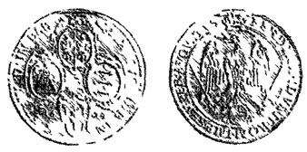
Рис. 62. Талер графа Максимилиана Фуггера (в гербе показаны молотки).
С развитием капиталистических отношений в горном деле предприниматели в большинстве случаев были не в состоянии руководить большими предприятиями по добыче серебра в одиночку Часто создавались товарищества — прообраз акционерных компаний XIX в, лишь Фугтеры составили исключение Фуггеры нажили огромные богатства на денежных операциях с Габсбургами и другими государями как откупщики и кредиторы Начали они действовать в этом направлении в 1488 г, дав ссуду эрцгерцогу Сигизмунду под обеспечение добычи с серебряных рудников Тироля Когда Тироль перешел к императору Максимилиану, в 1518 г в Инсбруке на собрании австрийских генеральных штатов 70 делегаций всех областей Австрии решали ряд вопросов, среди которых первым был — изыскание средств для выкупа у Фуггеров заложенных владений Тогда делегаты выделили 400 тыс золотых гульденов «для пополнения финансов страны» Затем под залог рудников Фуггеры дали деньги Карлу V Габсбургу, которые он раздал как взятки при избрании его императо — ром в 1519 г.
К Маркс, показывая положение в Венгрии при короле Людовике II перед наступлением турецких войск в 1525 г, пишет, что там не принималось необходимых мер к отражению турецкой угрозы, «магнаты здесь вечно враждовали между собой, неиствовали против Фуггеров, которые ссужали Людовику II, как и Карлу V, небольшие суммы, за что получали от него в выгодную аренду рудники в Венгрии и подвластных ей странах, подобно тому как получили от Карла V рудники в Америке, Испании, Тироле».
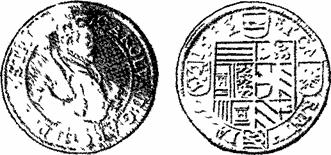
Рис. 63. Талер из серебра Каринтии.
Фуггеры глубоко внедрились затем в государственное хозяйство Испании, где правила испанская ветвь Габсбургов Банкротства испанских финансов в конце XVI в и начале XVII в разорили Фуггеров, и они превратились в графов-землевладельцев, имея право чеканки монеты, на которой в графском гербе видны молотки (рис. 62).
Каринтия. В Каринтийских Альпах имеется ряд гидротермальных месторождений в карбонатных породах, в том числе Блейберг, Крейт, Санкт-Вейт и др. Об этих месторождениях писал еще Г Агрикола: « В Каринтии (Норикум) у Виллаха на горе, которая называется свинцовой (Блейберг), добывали свинец», а в другом месте, перечисляя месторождения серебра, он отмечает: «в Каринтии (Карнтен) находится менее известный (чем Швац — М М ) Крейч» В А Обручев отмечал, что разработка, начатая еще римлянами, достигла в Блейберге 180 м, а в Крейте — 400 м ниже дна долины между горами Добрич и Рудными Первичными рудами являются серебросодержащий галенит и сфалерит.
Интересное сообщение о способе транспортировки руд приводит Г. Агрикола: «В области Норикум зимой руду грузят в мешки из свиной кожи со щетиной и стаскивают их с самых высоких гор, куда лошади, мулы и ослы не могут подняться. Порожние мешки на гору поднимают оседланные под вьюк сильные собаки, приученные к этому делу».
Каринтийские серебряные монеты (рис. 63) чеканились на монетном дворе в г. Санкт-Вейте, который был там создан после того, как император Максимилиан I отдал монетное право на откуп бюргеру Понграцу Хамелю, имевшему вблизи этого города собственный серебряный рудник.
ВенгрияОписания зарубежных месторождений стали доступны для широкого круга горных специалистов лишь с выходом в июле 1825 г., как уже писалось выше, старейшего русского технического журнала «Горного журнала». Одним из первых было опубликованное в виде статьи «О рудниках Венгрии» извлечение из работы Эли де Бомона «Взгляд на рудники». Интересна эта статья прежде всего тем, что позволяет судить об уровне знаний геологии рудных месторождений, существовавшем полтора столетия назад.
Необходимо оговориться, что Венгрия того периода, когда был написан ТРУД Эли де Бомона, включала в свои границы части Чехословакии, Румынии и Югославии и вместе с ними входила в состав Австро-Венгрии. Поэтому в настоящее время многие из упоминаемых ниже месторождений находятся вне территории современной Венгрии.
Шемница и Кремница. «Свита северо-западная заключает в себе округи Шемница, Кремница, Кенингс-берга, Нейзоля[27] …Шемнии, вольный город королевства и главное средоточие рудников венгерских, находится в 25 милях к северу от Буде».
Первые указания на эти месторождения имеются у Г. Агриколы. В 1Я46 г. он писял: «В Карпатах расположен очень древний серебряный рудник Шемншт… Жители Шемница добывают в настоящее время руду, содержащую свинец и серебро». В другом месте ой сообщает: «В нескольких местах в Карпатах есть смешанные месторождения золота и серебра, например, в Кенингсберге, Кремнице… Жители этих районов добывали руду, которую они расплавляли на огне; на камнях налипало черное вещество или очень тонкие пластинки красного золота. Но в этой руде содержалось больше серебра, чем золота. На один римский фунт серебра приходилось минимум 4, максимум 12 драхм золота». О последнем из вышеупомянутых месторождений Г. Агрикола пишет: «В Карпатах находится известный рудник Ноисоль. Доход, получаемый от него Фуггерами, ежегодно составлял 20000 венгерских золотых гульденов».
Эли де Бомоном описаны Шемницкие месторождения, которые лежат «посреди свиты небольших гор, покрытых лесом». Самая высокая гора имеет высоту 3125 футов и «состоит из трахитов, не содержащих ничего полезного». У подножия их, поверх трахитов, лежит порфирообразный диабаз большею частью зеленого цвета. В нем-то и заключаются все здешние рудники. Уже с давних времен известно, что порфирообразный зеленый камень Шемница имеет большое сходство с металлоносным порфиром Испанской Америки».
Морфологический тип месторождений Шемницы виден из следующих слов: «Металлоносная область Шемницкая… прорезана жилами, кои большею частью пересекают слои пород, но отчасти им параллельны. Сии жилы вообще очень мощны, толщина их простирается иногда до 120 футов, но протяжение их незначительно. Оне тянутся во множестве, будучи между собою параллельны».
Жильный материал «суть: кварц …железистая и углекислая известь и сернокислый барий… Сернистое серебро и свинцовый блеск составляют здесь главнейшие руды и встречаются либо отдельными, либо в многоразличных между собою соединениях, от чего жилы получают весьма различное богатство, так что содержание их простирается от 60 процентов до самой великой бедности. Золото редко попадается здесь в собственном виде своем, но бывает большею частью соединено с серебром, в содержаниях столь же различных, но которые преимущественно заключаются между 1 и 30 процентами».
Далее характеризуется техническое состояние рудников, причем отмечается, что в последнее время они начали приходить в упадок.
Остальные месторождения описаны менее подробно, в возможных случаях проводятся аналогии или ссылки на Шемницкие. О Кремницком сообщается следующее.
«Кремниц находится в 5 милях к северо-западу от Шемница, он лежит в долине, ограниченной с правой стороны цепью гор, подобных металлоносным Шемниц-ким. Посреди сих-то гор разрабатывают жилы почти такового же свойства, как и Шемницкие, кроме того только, что кварц находится в них в большем количестве, так что образует главную породу и содержит больше золота. Здешняя металлоносная область имеет малое пространство; она окружена и покрыта трахитом, который образует к востоку и к западу довольно высокие горы. Кремниц есть один из древнейших свободных городов Венгрии, В Кремнице находится монетный двор».
На рис. 64 показана продукция Кремницкого монетного двора XVI — XVII вв. — талеры короля Венгрии Фердинанда I (1556 г.) и князя Трансильвании Бетлена Габора (1621 г.). Они отличаются наличием букв К. — В (по-венгерски Кремница — Кормешбанья) по сторонам герба.
Объяснение чеканки монет правителями разных государств на этом монетном дворе можно найти в «Диалектике природы», Ф. Энгельс писал, что к концу средневековья возникла «сплошная культурная область — вся Западная Европа со Скандинавией, Польшей и Венгрией в качестве форпостов». И тот факт, что на Кремницком монетном дворе, переходившем вместе с частью Венгрии из рук в руки, чеканили монеты венгерские короли, трансильванские князья — ставленники турок, а также императоры из дома Габсбургов, убедительно свидетельствует, что Венгрия еще долго была форпостом против Османской империи. Он же объясняет и приведенную выше оговорку Эли де Бомона.
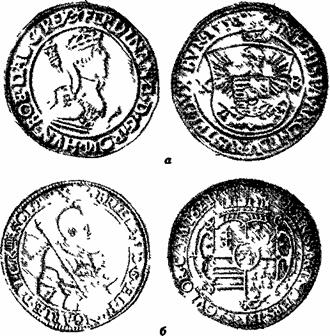
Рис. 64. Талеры Кремницкого монетного двора:
а — короля Фердивашда 1556 г;
б — принца Трансильванин Бетлена Габора 1621 г.
Нагибания.[28] Вторым из описываемых районов является северо-восточная свита. Здесь «Нагибанские горы сложены из пород, отчасти подобных Шемницким, и пересечены жилами, имеющими большое сходство с находящимися в том знаменитом месте. На сих жилах разрабатываются многочисленные рудники, из которых важнейшие суть: Нагибанские, Капникские, Фельсо-банские». На рис. 65 — талер, отчеканенный в 1622 г, трансильванским князем Бетленом Табором на Наги-банском (буквы N — В по сторонам герба) монетном Дворе.
Месторождения восточной свиты «находятся почти все в горах, возвышающихся на западной части Трансильвании между Лапосом и Маркосом в окрестностях Абрудбании. Здесь вообще 40 рудников, но знатнейшие из них лежат в Нагиаге, Коросбании, Вереспатаке, Боитце…»
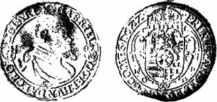
Рис. 65. Талер из серебра Нагибании (9/10 натур. вел.).
ПольшаСеребряную руду близ Олькуша в Верхне-Силезском районе Польши нашел в царствование Казимира Великого Григорий, монах Августинского ордена. Елизавета, сестра Казимира, дозволила жителям г. Олькуша всем и каждому вести здесь разработку руд в течение 6 лет, считая с 1374 г. с уплатой десятины и других пошлин. В грамоте было сказано: «на основании прежних правил и обычаев», из чего следует, что ранее здесь производилась добыча других руд. Затем король Александр в 1505 г. издал специальный закон о разработке рудников Олькуша. В его царствование распространенным типом монеты были полугроши (рис. 66, а).
Разработка месторождения производилась интенсивно. На картах и маркшейдерских планах, относящихся к царствованию Августа III, было обозначено 410 шахт. Большой помехой при добычных работах была вода. С 1455 г. на водоотливе работало 800 лошадей. Затем были пройдены 6 водоотливных штолен (первая в 1517 г.) длиною по несколько километров, направленные к центру месторождения; каждая проходилась десятки лет.
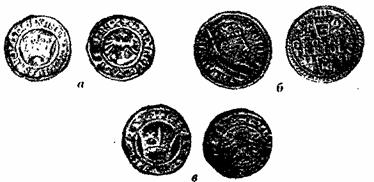
Рис. 66. Монеты из серебра Олькуша:
а — полугрош Александра;
б — трехгрошевик Сигизмунда III;
в — полугрош Свидницы.
В Олькуше с 1578 по 1601 г. при Стефане Батории и Сигизмунде III (рис. 66, б) существовал монетный двор.
Расцвет рудников относится к периоду 1549 — 1669 гг. Рекордным был 1659 г., когда было добыто 2,7 т серебра и 920 т свинца. Оставшиеся от XVI — XVII вв. отвалы и шлаки содержали в среднем 9% свинца. Сильно пострадали рудники в период войны с Швецией. Карл XII наложил на олькушских рудокопов контрибуцию. Поскольку Северная война длилась 21 год (ее решающим моментом была Полтавская битва), водоотливные штольни обрушились и не восстанавливались. Разработки прекратились, хотя запасы руды еще оставались.
Свинцово-цинковые серебросодержащие месторождения Верхней Силезии приурочены к ракушечному известняку (мушелькальку), смятому в пологие складки. Известняки сильно доломитизированы. Среди них имеется ясно выраженный горизонт мощностью от 1, 5 до 4 м, наиболее благоприятный для отложения РУДЫ. Первичные минералы — сфалерит, вюртцит, галенит, пирит, марказит. Их окисление привело к образованию галмейных руд. Серебро связано с галенитом.
В конце средних веков в Силезии было княжество «Священной Римской империи» Свидница со столицей в одноименном городе В начале XVI в , когда это княжество принадлежало венгерскому королю Людовику, в Свиднице чеканились (вероятно, из олькушского серебра) полугроши (рис 66, в) по типу коронных польских полугрошей (см рис 66, а) Поскольку свид-ницкие полугроши были из низкопробного серебра, а польские — из высокопробного, это существенно подрывало польские финансы.
Чтобы не возвращаться к Олькушскому месторождению, необходимо отметить, что одним из следствий наполеоновских войн была потеря Польшей независимости: она стала именоваться Царством Польским в составе России В 1815 г. в Польше был возрожден казенный горный промысел Были возобновлены разработки трех галмейных рудников — Иозеф в Старом Оль-куше, Улисс в Буковие и Иержи в Старчинове Гнезда галмея в них, как правило, были покрыты серебросодер — жащим галенитом, однако серебра там добывалось немного Поэтому и являются довольно редкими чеканенные из этого серебра десятизлотовые монеты с надписью «Z SREBRA KRAIOWEGO»
СкандинавияШвеция. Важнейшими в Швеции были месторождения серебра Сала. Рудники здесь действуют с 1282 г, эксплуатация их началась при короле Магнусе Лудуло-се Наибольшее количество серебра и свинца они дали в XV и XVI вв Рекордным был 1506 г , когда было добыто серебра 35266 марок; в 1551 г добыча снизилась до 14272 марок, а в 1560 г. — до 5215 марок Вся добыча в XV, XVI и XVII вв составила 1 640 000 марок, или 348,5 т.
В 1612 г Густав П-Адольф (рис 67) сделал Салу горным городом, а в 1628 г. передал рудники на откуп частному горнопромышленному обществу В 1831 — 1834 гг рудники Сала давали по 3300 марок серебра, в начале XX в они разрабатывались преимущественно на цинк.
Месторождение Сала в Швеции представляет собой большой «сколь», или главную трещину в массиве доломитизированного известняка длиной 10 км и шириной более 3 км «Сколь», вскрытый громадным старинным карьером, представляет собой пояс мощностью около 3, 5 м с крутым падением, от которого отходит ряд боковых более узких трещин Руды находятся и в самих жилах «сколей» и в виде вкрапленности и сети прожилков в известняках около «сколей» Главными рудами являются серебристый галенит и бурая цинковая обманка. Обе руды обыкновенно следуют отдель— ными полосами, сопровождаются пиритом, мышьяковым колчеданом, сурьмяным блеском, самородным серебром и др.
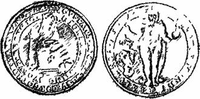
Рис. 67. Талер Густава II Адольфа (9/10 натур. вел.)
Норвегия. В 1623 г. в этой стране было открыто месторождение серебра. В первые годы находили довольно крупные самородки: в 1628 г — 67, 5 фунтов, в 1630 г. — 204, 5 фунта, в 1666 г. — 560 фунтов Последний из них хранится в Дании в Копенгагенской кунсткамере, а первые пошли в переплавку.
Талер 1630 г. (рис. 68, а) отчеканен в Копенгагене, возможно из серебра упомянутого самородка, а крона[29] 1726 г (рис 68, б) отчеканена уже на монетном дворе в самом Конгсберге, знаком которого являются горные молотки под монограммой короля Фридриха IV Об этой монете стоит рассказать подробнее.
Вокруг монограммы Фридриха IV — сокращенная надпись «божьей милостью король Дании, Норвегии, Вендена и Готланда», вокруг герба подпись — «господь мой пособник» На гербовом щитке кроны расположены три леопарда — герб Дании; лев, держащий кривую алебарду, — герб Норвегии и три короны — герб Швеции. То, что связано с гербами, создает интересный исторический фон[30].
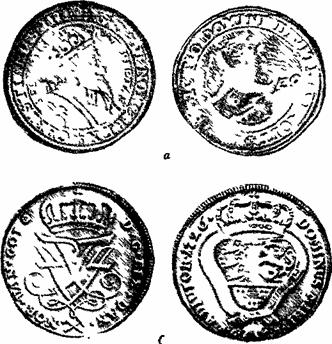
Рис. 68. Монеты из серебра Конгсберга:
а — талер 1630;
г ,б — крона 1726 г.
Скандинавские государства в старину были избирательными монархиями, где власть королей не передавалась по наследству. В 1380 г. была заключена датско-норвежская уния, а в 1397 г. Кальмарская уния, создавшая объединенное датско-норвежско-шведское королевство под главенством Дании, Но уже в 1448 г. Швеция вышла из унии и избрала своего короля, потеряв при этом южную свою часть, которая осталась в руках Дании.
Шведские короли стали носить титул: «божьей милостью король Швеции, Готланда и Вендена», и три короны в шведском гербе соответствовали этим трем территориям, две из которых фигурируют также в гербе Дании.
В течение последующих столетий между Данией и Швецией велись войны, причем в ряде случаев яблоком раздора были и три короны. Так, например, К. Маркс отмечает, что когда Христиан IV хотел расширить датские владения в южной Швеции «поводом к войне… были три короны, символ власти над всей Скандинавией, которые оба короля сохранили на гербе». Однако после двух лет (1611 — 1612 гг.) войны «спор о трех коронах остался нерешенным». Эти три короны, как и норвежский лев, вышли из герба Дании лишь в 1814 г, когда после разгрома Наполеона и завершения англодатской войны 1807 — 1814 гг. Норвегия по Кольскому договору была уступлена Данией «в полную собственность» Швеции[31]. Независимым королевством Норвегия стала лишь после расторжения унии в 1905 г.
Месторождение Консберг неоднократно, хотя и бегло, описывалось в учебниках и других трудах по рудным месторождениям (и достаточно известно современному геологу), однако ссылок на первое его описание на русском языке нигде не встречено. Внимание русских геологов к этому месторождению было привлечено в 30-х годах XIX в , когда началась его «вторая жизнь». Начиная с
1834 г, в «Горном журнале» был опубликован ряд заметок и среди них — обстоятельная статья «О се — ребряном производстве в Конгсберге, в Норвегии» горного инженера майора Ковригина I, посетившего месторождение в 1838 г[32].
Ковригин сообщает, что серебряное производство в Норвегии началось с 1623 г. Первый открытый здесь рудник Конгенс (Королевский) оказался самым 6oia-тым и долговечным, хотя и в его деятельности был значительный перерыв. «Годы 1704 — 1723 были самыми счастливыми: в этом периоде чистая прибыль простиралась иногда за 100 тысяч талеров. С 1/24 по 1732 рудники действовали в наклад, а с 1732 по 1747 опять с большою выгодою. С 1747 до 1805, когда при посте — пенном увеличении открытий насчитывали более ста рудников и когда по изубожению жил горное производство было однако же остановлено, разработка сопровождалась то накладом, то прибылью».
В 1816 г, «по соединении Норвегии с Швециею» была возобновлена разработка рудника Арменгрубе, но без успеха и «в 1827 году положено было продать с аукционного торга все серебряные рудники, вместе с заводом, но, к счастию, не нашлось охотников на покупку верного богатства. В этом же году открыто квершлагом из Арменгрубе богатое самородным серебром продолже-ние южной жилы Королевского рудника в 190-ти саже-нах от поверхности или в 35-ти саженах от того горизонта, где разработка помянутой жилы по причине ее убогости была в 1805 году остановлена», С этого началась вторая жизнь Конгсберга.
По оценке Ковригина: «Ни один из серебряных руд-ников Европы не может сравниться богатством своим с рудниками Конгсберга. При меньшем развитии и нис-шей степени производства они дают относительно более серебра, нежели самые цветущие рудники Гарца, Саксонии и Венгрии. Этот драгоценный металл не заключен в самородном виде нигде в таком количестве, как в диких горах Скандинавии», Ковригин дает краткое описание орогидрографии района:
«Действующие рудники Королевской и Арменгрубе находятся в 3/4 мили от города к юго-западу, Они на самой вершине горы, принадлежащей к цепи, когорая большую часть года бывает покрыта снегом… Вообще горы по правую сторону Лауге, в коих заключаются все почти серебряные рудники, представляют две параллельные цепи, или, лучше сказать, два уступа, один над другим. Нижний, ближайший к реке, несет название Нижнего кряжа, верхний же, или дальний, называется Верхним кряжем Оба помянутые рудника, равно как и большая часть других, ныне неразрабатываемых, лежат в последнем».
Из этих слов, а также если учесть, что рудоносная площадь Лаугена и многими впадающими в них речками реки Лаугена и многими впадающими в них речками и ручьями, можно сделать вывод о значительном колебании зоны окисления на близких расстояниях, что сыграло существенную роль в истории разработки Конг-сбергского месторождения. Вероятно, не понята была еще тогда и роль тектоники, создавшей Верхний и Нижний кряжи в одном из бортов имеющегося, по современным представлениям, в районе г. Осло грабена.
Давая характеристику рудному полю, Ковригин пишет: «Формация, заключающая в себе среброносные жилы, есть слюдяный сланец, переходящий в гнейс, в тальковый, хлоритовый и чаще всего рогообманковый сланцы… . Пласты ея простираются от северо-запада на юго-восток и падают на восток между 80° и 70°. Они во многих местах проникнуты на различную длину по простиранию и от нескольких футов до нескольких саженей по ширине (в 2-х главных рудниках иногда до 20,в среднем 8 сажен) серным и медным колчеданами и цинковою обманкою, представляя таким образом параллельные или под весьма острым углом соединяющиеся между собою полосы, которые с поверхности от разложения колчеданов имеют желтовато-бурый цвет и называются Fallbande. Среброносные жилы пересекают их почти под прямым углом, простираясь от востока на запад и падая более на юг между 60° и 70°».
Не зная еще, что концентрация серебра в участках пересечения объясняется химическими процессами, связанными с окислением сульфидов железа, растворением сульфидов серебра, последующим восстановлением иона серебра и образованием вторичного самородного серебра, а также что ниже уровня грунтовых вод пирит играет роль «геохимического барьера» рудоотложения, отдавая свою серу ионам серебра, в результате чего образуется супергенный сульфид серебра (этот вопрос был разработан лишь к концу столетия), Ковригин продолжает: «Замечательно, что оне заключают в себе серебро там только, где проходят через полосы; по миновании же их делаются тотчас несодержащими».
Далее Ковригин высказывает свою точку зрения об относительном возрасте фальбандов и жил:
«Соображая это любопытное явление с тем, что висячий и лежачий бока Конгсбергских жил, не имеющих вообще зальбан-дов, являются часто проникнутыми самородным серебром на большее или меньшее разстояние, должно по крайней мере заключить, что образование их современно происхождению колчеданистых полос, или что в состав этих частей формации колчеданы вошли в то же время, когда образовались жилы».
Ковригин характеризует параметры жил и дает обстоятельную характеристику руд:
«Толстота жил изменяется от нескольких дюймов до нескольких футов. Жильную породу составляют известковый и тяжелый шпаты, частью кварц и редко плавиковый шпат… В этом-то выполнении жил заключается самородное серебро и в небольшом количестве стекловатая серебряная руда… Самородное серебро находится в сплошном, ветвистом, проволочном, волосистом, мохообразном и весьма часто кристаллическом виде».
Сейчас в учебниках это месторождение почти не упоминается, может быть, потому что аналогов ему не найдено. По данным на 1965 г., серебра в Норвегии уже не добывалось, хотя в 1935 — 1939 гг. Конгсберг давал от 7 до 11 т серебра в год. Всего же на Конгсберге было добыто 1270 т серебра, глубина разработки достигла 1076 м.
Возвращаясь к кроне 1726 г., следует отметить, что она была отчеканена, видимо, под впечатлением «самых счастливых» 1704 — 1723 годов добычи, когда еще не очень чувствовалась начавшаяся затем работа «в наклад» и (с опозданием на 3 года) отметила 100-летие рудников. Эта крона явилась интересным нумизматическим памятником, позволившим вскрыть малоизвестную страничку истории развития учения о рудных месторождениях в нашей стране.